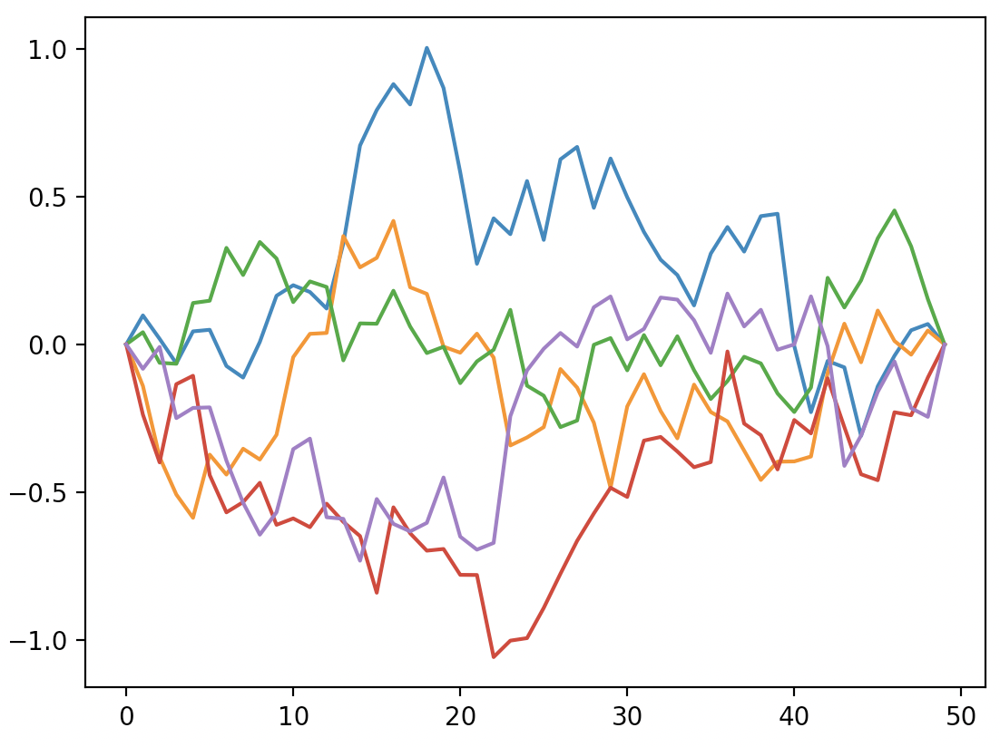
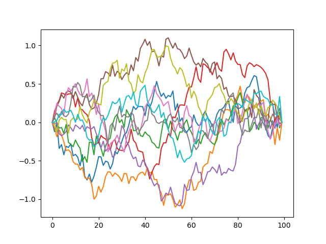
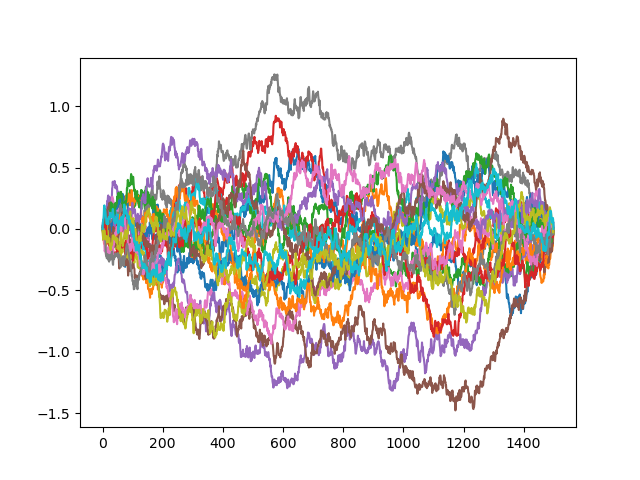
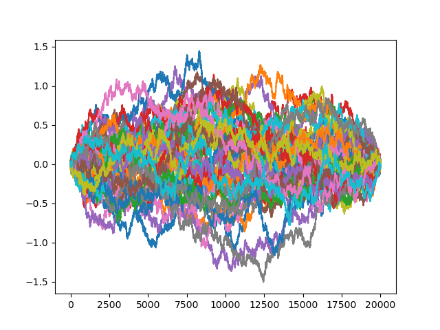
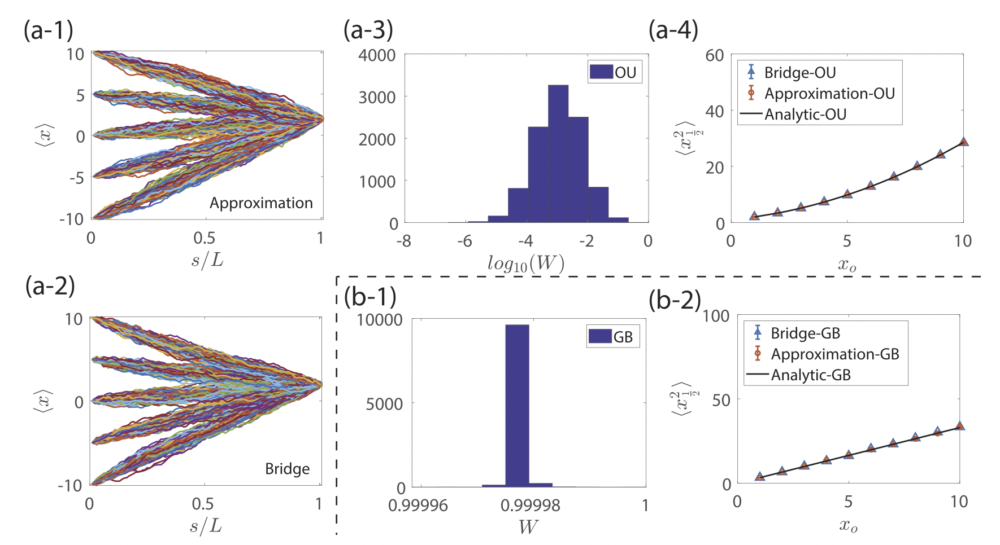
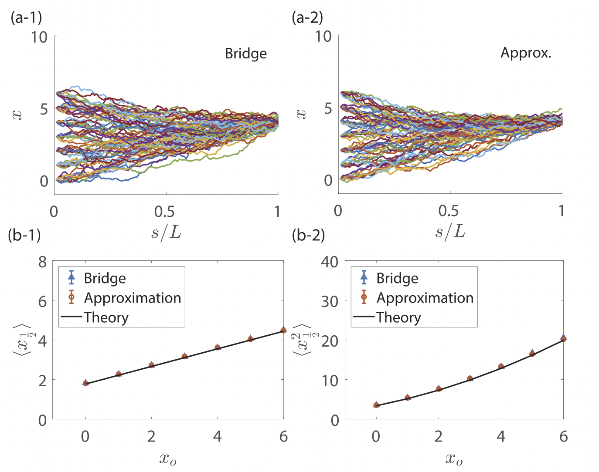
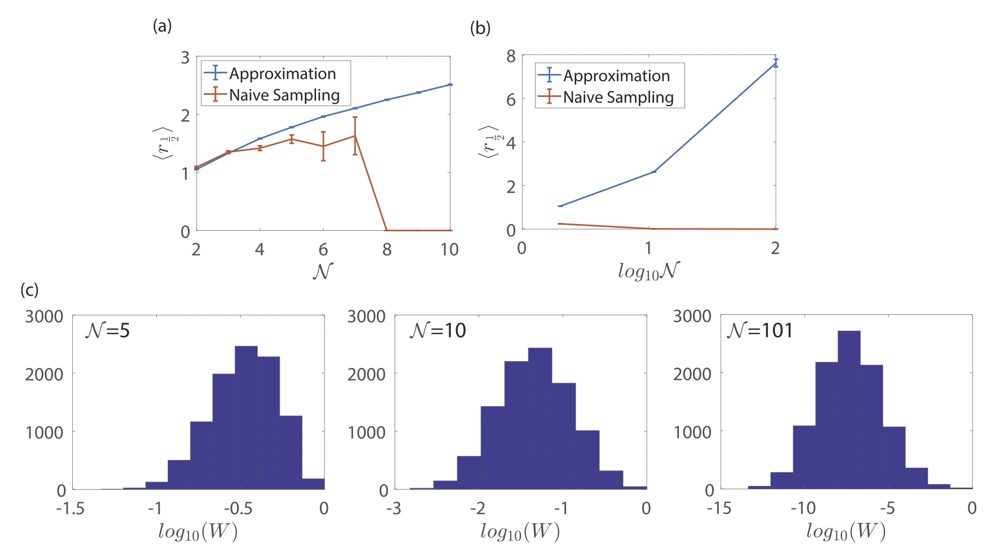
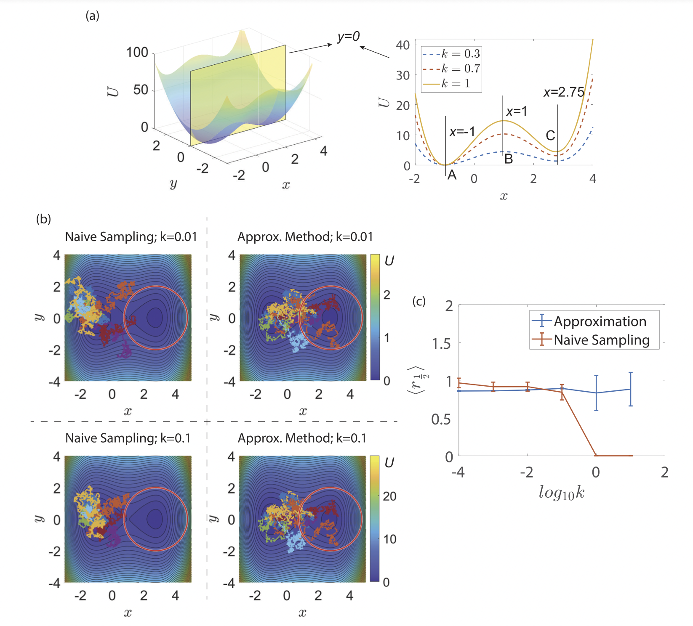

Journal club presentation by Kyunghoon Han
Theoretical Chemical Physics Group, University of Luxembourg
Title : Brownian bridges for stochastic chemical processes--An approximation method based on the asymptotic behavior of the backward Fokker-Planck equation
Authors : Shiyan Wang, Anirudh Venkatesh, Doraiswami Ramkrishna, Vivek Narsimhan of Purdue University
A fast approximation method to generate Brownian bridge process without solving the Backward Fokker-Planck (BFP) equation




Givens
Suppose $\vec{A}=-ㄷ\nabla U$, $ㄷ$ a drift coefficient, for some continuous dimensionless external potential $U(\vec{x})$. Then the Itō's relation becomes: $$ d\vec{x} = ㄷ\cdot \nabla U ds +\vec{B}\sqrt{ds}\cdot \vec{Z} $$ where $\vec{Z} \sim \mathcal{N}^3(0,\vec{1})$.
An SDE that samples the conditional probability $P\left((\vec{s})|\vec{x}(0)=\vec{x}_0,\vec{x}(L)\in \Omega_L\right)$, i.e. a Brownian bridge $\vec{x}^{Br}$, is:
$$
d\vec{x}^{Br} = d\vec{x} + \underbrace{\vec{B}\vec{B}^T \frac{\partial}{\partial \vec{x}}\left(\ln q\right)}_{\text{additional drift}} ds
$$
with $\vec{x}(0)=\vec{x}_0$. Where...



